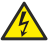

Safety
Symbols and Warning Labels

Warning – Danger area

Caution– Danger of electric shock
Danger of Electric Shock
The device is to be serviced by qualified personnel only as live parts may be exposed when opening and/or removing coverings.
Touching live parts may cause electric shock.
Dispose of as hazardous waste. Follow the applicable regulations.
For more information see Disposal.
Declaration of conformity
For more information see Conformity.
Operating voltage ON/OFF
Warning:
The device has to be grounded.
Do not ignore the safety purpose of the grounding-type plug. A grounding-type plug has two blades and a third grounding connection. The third connection is provided for your safety.
Read all the instructions in this Quick Manual thoroughly, especially the General Safety Instructions further down and Limitations.
Follow the instructions and keep this Quick Manual for future use.
Follow all cautions and warnings stated in this Quick Manual and indicated on the device.
Important:
All repair and service work has to be exclusively performed by qualified service technicians.
- This device is state-of-the-art technology;
- However, residual risks cannot be ruled out;
- To avoid risks, follow the safety instructions;
- This class A device can cause radio frequency interference in a domestic environment;
- This device is intended for professional use only and is not suitable for residential use.
MA Lighting Technology GmbH does not bear the damage which may occur due to inobservance of the safety instructions.
Dangers caused by Electric Current
Defective device or defective power cable poses a risk of severe or fatal injury due to electrical shock.
Follow the safety instructions to avoid the risks caused by electric current.
- Do not use a defective power cable;
- Do not open screwed down covers from the housing;
- Use the device only if it is in a technically impeccable condition;
- Do not repair the device on your own;
- Do not reverse engineer the device, and make any changes to its components, and accessories;
- Do not expose the device to rain or moisture;
- Do not submerge the device in water.
General Safety Instructions
To avoid injury or damage to the device:
- Do not put your hands inside the device during operation;
- Device and power cable must be kept away from children under the age of 8;
- Children are not allowed to play with the device;
- Disconnect the power supply from electric voltage during thunderstorms;
- Disconnect the power supply from electric voltage if it is unattended for a longer period of time;
- Disconnect the power supply before cleaning the device;
- Do not use any liquid or spray cleanser. Use a dry cloth only;
- Do not use device in the vicinity of water;
- Do not expose it to a humid environment;
- Do not pour any liquids over the device.
- Do not block or cover any ventilation holes in the housing. These are essential for the airflow within the device and protect the device from overheating;
- Do not insert any objects into the ventilation holes of the device as these could get in contact with live parts or could cause short circuits, fire and/or an electric shock;
- Do not place any objects on the power cable. Protect it from being walked on or pinched, particularly at the connector and where the cables exit the device;
- When using an extension cable, make sure the rated output of all devices connected in series does not exceed the maximum rated output of the extension cable;
- Do not support yourself on the device;
- Do not place any heavy objects on top of the device;
- Do not use excessive force on keys, buttons, faders, encoders, switch, connector;
- If the power cable or the main power plug are defective, let a qualified technician replace it immediately;
- Place the device on stable surfaces only. If it is placed on unstable surfaces, it may fall and break.
- Only use power cables which are safety-marked;
- Do not use any high-power walkie-talkies or cell phones near the device;
- The device is provided with a safety plug. This plug can only be used with safety outlets.
- As with all industrially manufactured goods, the use of substances that induce an allergic reaction such as aluminum cannot be generally excluded. If you develop an allergic reaction (such as a skin rash, frequent sneezing, red eyes or respiratory difficulties), consult a physician immediately to determine the cause.
If one of the following conditions occurs, disconnect the main power plug and call your local distributor or the technical support!
- Power cable or main power plug is damaged or worn;
- Ingress of liquids;
- The device was exposed to rain or high ambient humidity;
- The device does not function properly, even if you followed all the instructions of this Quick Manual. Only operate the controls as stated in the Quick Manual. Incorrect control settings may damage the device;
- The device fell damaging the housing.